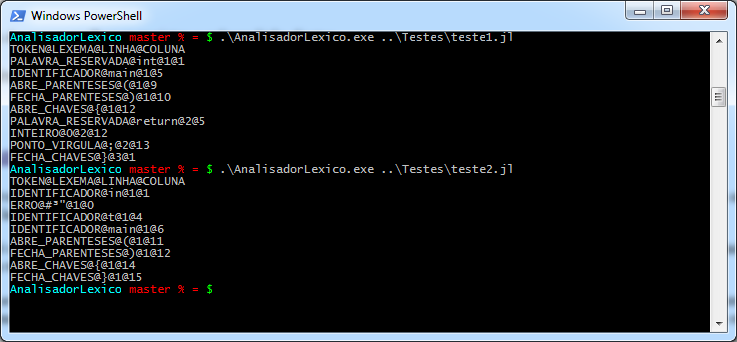
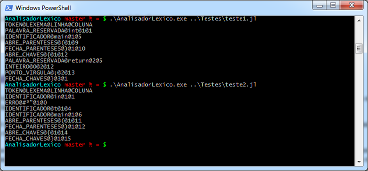

Seja bem vindo!
Agradeço sua visita.
Futuramente, irei descrever melhor os projetos e colocar links diretos.
Analisador Léxico
Linguagem: C
Repositório: GitHub
 


Projeto desenvolvido como requerimento para a disciplina de Compiladores, cursada no 2º Quadrimestre de 2018. Trata-se de um analisador léxico para uma variação da linguagem "javalete", conforme especificação proposta.
A análise léxica é a primeira parte do processo de compilação. O trabalho do analisador é interpretar o conjunto de caracteres digitados no arquivo fonte e transformá-lo em tokens que serão utilizados nas próximas etapas de compilação.
Nessa etapa não se preocupa em saber se as palavras digitadas respeitam a sintaxe correta, apenas se elas estão escritas da forma correta. Dessa forma são identificados apenas os erros mais simples relacionados ao alfabeto utilizado, ou seja, se houve a utilização de caracteres inválidos em determinadas palavras.
A implementação foi realizada através de uma máquina de estados que avaliava os caracteres da entrada um a um. Assim que havia um espaço, se a máquina estivesse num estado de aceitação, gerava o token correspondente à palavra lida. Caso a máquina não estivesse num estado de aceitação, retornava um token de erro. Note que a máquina ignorava comentários e espaços em branco consecutivos, reduzindo o processamento necessário.
O projeto foi realizado em conjunto com mais dois alunos, porém fui o principal responsável pelo código, enquanto os outros se concentraram mais no planejamento da máquina de estados e a redação do artigo que foi entregue como parte dos requisitos da disciplina.